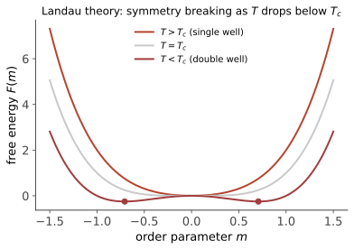

统计进阶 I · 相变与 Landau 理论
对标：Goldenfeld §1–5 / Pathria §12 ｜ 前置：sm-01/02、优化 I（凸性） 相变是统计物理最深的现象：无穷多个温和的自由度合谋出不连续。本页立起语言（序参量、对称破缺、临界指数）与第一代理论（Landau 平均场）——它优雅、普适、并且在临界点附近定量地错：这个"错"恰是重整化群（asm-03）的出生证。
1. 相变的语言
分类：一级相变（序参量跳变、潜热、共存——冰水）；连续（二级）相变（序参量连续归零、涨落发散——临界点：磁铁的 Curie 点、水的临界点、超导转变）。
序参量：区分两相的量——磁化 \(m\)（铁磁）、密度差（液气）、凝聚波函数（超导/超流）。对称性自发破缺：哈密顿量对称（上下自旋等价）而低温态不对称（磁化选了方向）——"定律的对称 ≠ 状态的对称"：本页最重要的世界观（从磁铁到 Higgs 机制（pp-02）到宇宙早期相变（cosmo-02），同一句话统治三十个数量级的能标）。
严格性注脚【引用】：有限系统无相变（配分函数 = 有限项解析和）——非解析性只在热力学极限 \(N \to \infty\) 出现（Lee–Yang 零点趋近实轴的图像）："无穷"不是数学洁癖，是相变存在的前提。
2. Landau 理论（对称性 + 解析性的最小模型）

纲领：临界点附近 \(m\) 小——自由能按 \(m\) 展开，只保留对称性允许的项（Ising 对称 \(m \to -m\) 排除奇次项）：
【推导（极小化）】 \(T > T_c\)：单井、\(m = 0\)；\(T < T_c\)：\(m^2\) 项变负——双井（mech-04 零模/失稳的自由能版），极小在
——序参量以幂律生长，临界指数 \(\beta = \frac12\)；同法算出磁化率 \(\chi \propto |T - T_c|^{-1}\)（\(\gamma = 1\)——临界点处对外场无限敏感）、临界等温线 \(\delta = 3\)、比热跳变（\(\alpha = 0\)）。\(\blacksquare\)
双井的物理剧场：外场 \(-hm\) 使双井倾斜——一级相变与磁滞（亚稳态 = 局部极小：过冷水、过热液体的自由能面语言）；井间壁垒 ⇒ 成核动力学【引用】。Ginzburg–Landau 推广：\(m \to m(\mathbf x)\) 加梯度项 \(\frac{c}{2}|\nabla m|^2\)——界面张力、关联长度 \(\xi \propto |T - T_c|^{-1/2}\)（涨落的空间尺度在临界点发散：乳光临界现象的公式）、超导的 GL 方程（cm-02 的接口）。
3. 平均场的普适预言与它的失败
Landau = 平均场（每个自旋感受平均磁化——涨落被忽略）。普适预言：临界指数与材料细节无关（只看对称性）——方向正确（实验确实分"普适类"）；数值错误：三维 Ising 实测 \(\beta \approx 0.326\)（非 \(\frac12\)）、\(\gamma \approx 1.237\)（非 1）——
病根【Ginzburg 判据，骨架】：临界点附近涨落幅度与序参量本身同阶（\(\xi\) 发散使"平均"失去代表性）——平均场在 \(d < 4\) 维必然在足够近临界处失效（上临界维数 \(d_c = 4\)：维数越低涨落越凶——一维 Ising 甚至无相变，asm-02 证明）。"涨落主导的物理需要新方法"——重整化群（asm-03）接单。
🔗 ML 对账（本线的特别福利）：平均场近似 = 变分推断的 mean-field family（comfy 课 VAE/数学站信息论的 ELBO——同名同物：用独立分布近似关联分布、在自由能泛函上变分）；序参量/对称破缺的语言也在神经网络训练动力学分析中日常出没【引用】。
4. 练习与要点
例 1（Landau 手算全套） 给定 \(a, b\) 数值：算 \(T < T_c\) 的 \(m(T)\)、\(\chi(T)\) 两侧、比热跳变 \(\Delta C = \frac{a^2T_c}{2b}\)——一页纸把四个临界指数全部产出（平均场的高效与整齐正是它迷人的地方）。
例 2（对称性决定展开） 若系统无 \(m \to -m\) 对称（如液气转变以密度为序参量）：允许 \(m^3\) 项 ⇒ 一般给一级相变；调参数使三次项系数为零 = 临界点（液气临界点与 Ising 同普适类的 Landau 层面理由）——"对称性决定相变类型"的操作版。
例 3（Ginzburg 判据估算） 超导体涨落区宽度 \(\sim 10^{-14}\,T_c\)（关联长度大、涨落弱——平均场极好用：BCS/GL 成功的原因）；液氦 λ 转变涨落区 \(\sim O(1)\)——平均场全线失效：同一理论在不同材料的适用性由 Ginzburg 数一票裁定。\(\blacksquare\)
下一页：把最小的相变模型解到底——Ising 模型：一维精确解（无相变的证明）、二维的 Onsager 奇迹与平均场的对照。